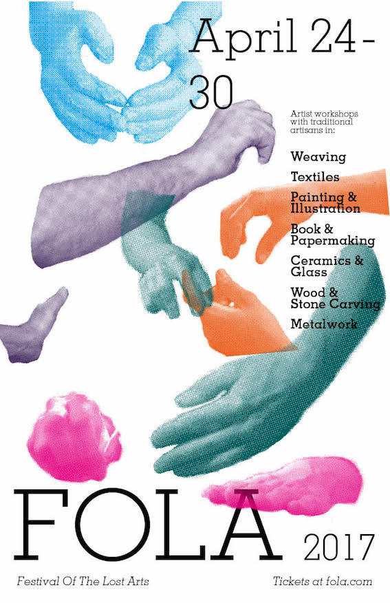
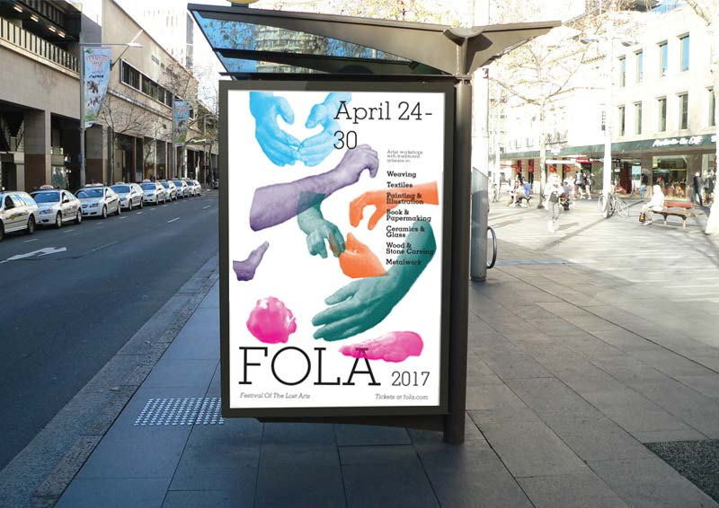
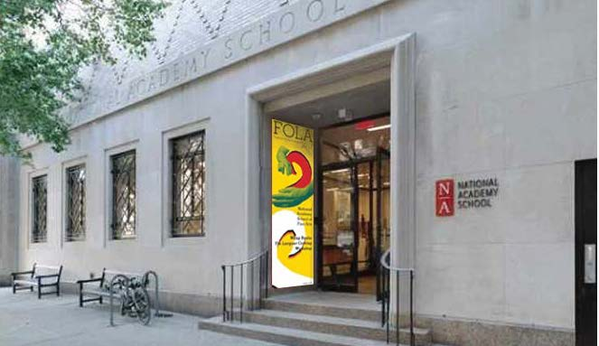
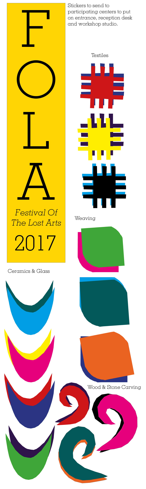
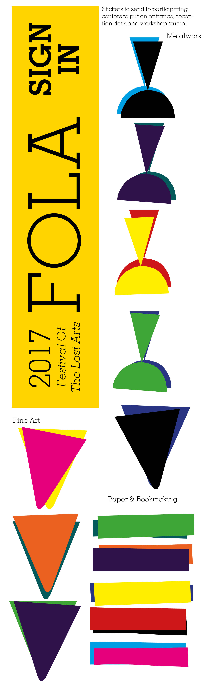
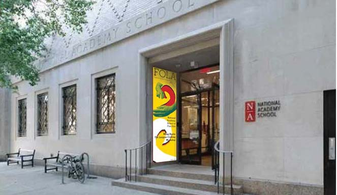
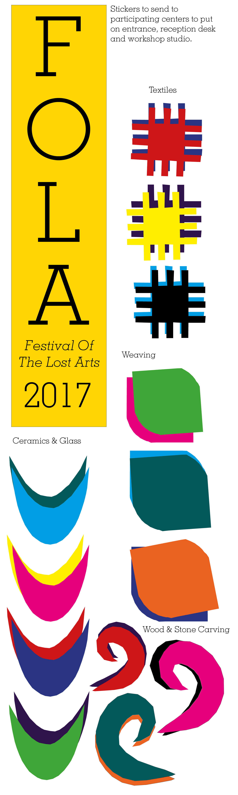
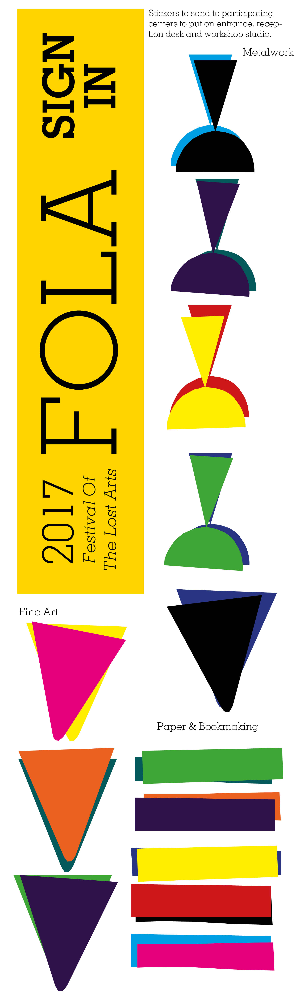

Olimpia Pignatti
Projects
About
Festival Identity and Poster
For this project I made up a festival and created a type-driven identity and campaign for it. I chose to "organise" a festival called FOLA, Festival of the Lost Arts, which brought together young artists and artisans whose craft was in danger of dying out. Through workshops around New York FOLA aimed to rekindle the love of ancient and traditional crafts in the new generation and save these dying artforms from extinction.
 
 




